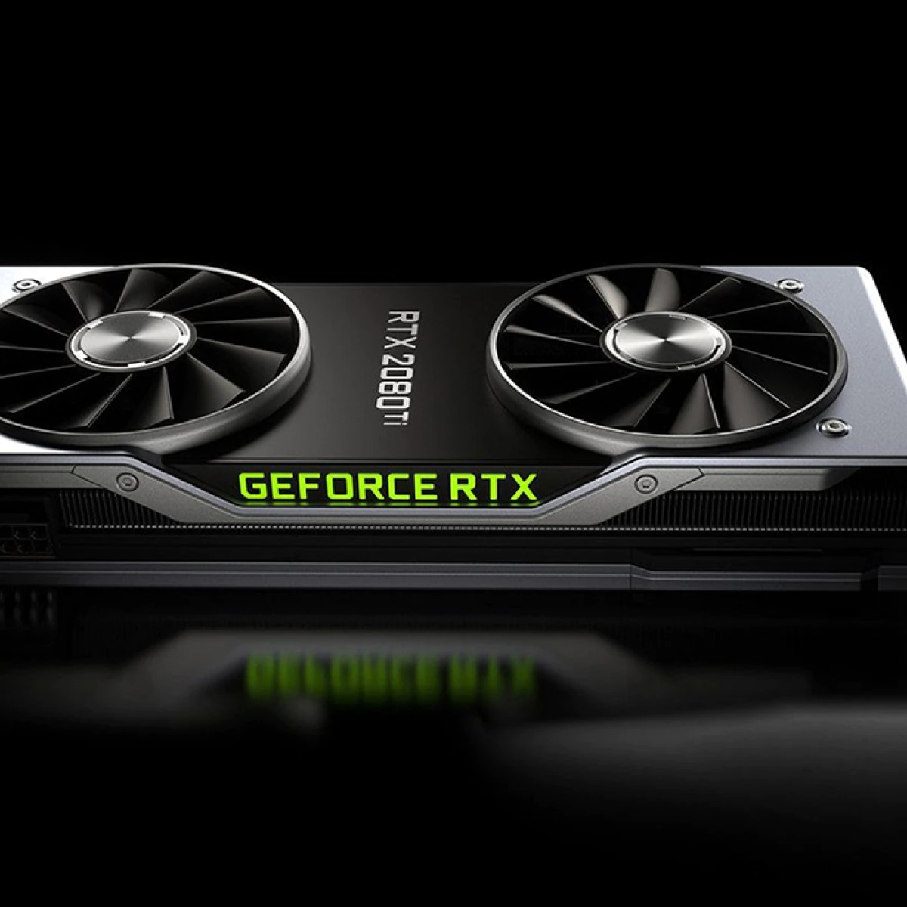

O desenvolvedor de TI que foi embora, e largou o café pela metade.
Postado em 13/04/2022
Este caso é real. Um amigo que é sócio-proprietário em uma empresa de TI, me contou que na sua empresa aconteceu algo inusitado. Um desenvolvedor, recebeu um convite para ir trabalhar em outra empresa, levantou-se, deixou o café pela metade, deu tchau e foi embora. Certo é que ele não era um talento que se perdeu. Ele tem apenas 1,5 anos de experiência, e uma limitada responsabilidade, baixa capacidade de entrega e estava ali apenas para aprender um pouco e então pular para outra oportunidade no mercado. Não estava comprometido, nem engajado. A dor maior que fica é que ele tinha plano de saúde, bônus trimestrais por metas alcançadas, participação em resultados anuais, dispensas para participação em eventos de seu interesse, capacitações internas, e tudo isto não foi o suficiente para que ele reconhecesse o que a empresa lhe oferecia. Fatos como este já devem ter acontecido em sua empresa. Como resolver a questão de atrair talentos, desenvolvê-los e mantê-los nas empresas de TI? Quais são os elementos cruciais para o sucesso e progressão em uma carreira de TI? Até quando o segmento de TI vai se manter como o campeão da rotatividade profissional?
Leia mais...ASRock: demanda de GPUs por mineradores cai e preços devem baixar
Postado em 03/11/2021 O que era para ser um relatório sobre as perspectivas da fabricante de hardware taiwanesa ASRock para o segundo trimestre de 2021, divulgado ontem (16) no site DigiTimes, acabou se transformando em nota de consolo e esperança para os gamers que aguardam a normalização do mercado de GPUs. Segundo a empresa, a demanda do componente por mineradores de criptomoedas está caindo. O potencial para uma redução dos preços estratosféricos das GPUs anima os jogadores que esperam adquirir uma nova placa de vídeo ainda neste ano. Possivelmente a queda na demanda de GPUs reflete a decisão do governo chinês no mês passado (21) de proibir a utilização de criptomoedas em todas as instituições financeiras do país. A medida teve impacto na atividade na China, a maior "mineradora" do planeta, com uma enxurrada de GPUs sendo vendidas no mercado de segunda mão, o que refletiu no fornecimento global. Para se ter uma ideia do volume da criptomineração, publicamos aqui no TecMundo um relatório mostrando o envio de 700 mil placas gráficas a mineradores somente no primeiro trimestre deste ano.
Leia mais...